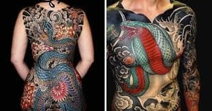
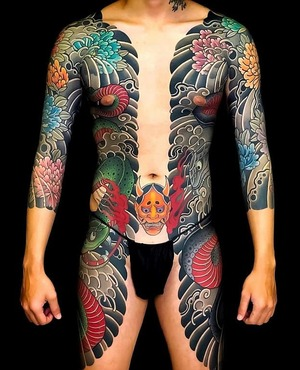
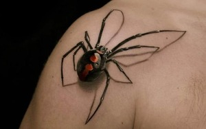
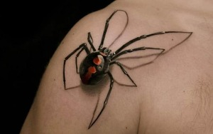

Estilo Tradicional Japones



 

Un Tatuaje es una forma de modificación corporal, la cual consiste en alterar de manera temporal o permanente el color de la piel, sobre la cual se plasma un dibujo, un patrón, una figura o un texto, el cual se plasma con agujas u otros utensilios que inyectan tinta o algún otro pigmento en la dermis de una persona.
La evidencia más antigua de tatuajes en momias se encontró en una perteneciente a la Cultura Chinchorro, en la costa de Chile. En estas se conservan tatuajes existentes datados en el año 2000 a. C. Este tatuaje consiste en un bigote delgado sobre el labio superior de un hombre adulto. Inclusive, en la misma zona se ha encontrado evidencia arqueológica que datan de hasta 6.000 años de antigüedad que podrían representar herramientas para el tatuaje.
En 1991 se encontró una momia neolítica dentro de un glaciar de los Alpes de Ötztal, con 77 tatuajes en su cuerpo (68 en la muñeca, 2 en la zona lumbar de la espalda, 5 en la pierna derecha y 2 en la izquierda). Esta momia es conocida como el «Hombre de Hielo». Es el cadáver humano con piel más antiguo que se ha encontrado y su antigüedad varía según distintos autores: Cate Lineberry, le ha calculado unos 5200 años de antigüedad. Sin embargo, las distintas culturas que utilizaron el tatuaje lo hicieron de distintas maneras; tanto como arte, en el sentido de creación de significados rituales o simbólicos, como ocurría en el Antiguo Egipto, como para marcar o señalar a los criminales, que es el caso de las antiguas Grecia y Roma. Incluso se cree que, por su posición en el «Hombre de Hielo», las marcas cumplieron un fin terapéutico, semejante a la acupuntura. Otras famosas momias antiguas con tatuajes que se han encontrado han sido la momia de Amunet, proveniente del Antiguo Egipto, y la momia está demostrando que la práctica del tatuaje es tan antigua como la historia de la humanidad. Además también se utilizaba en algunas tribus para diferenciarse los unos con los otros. Ademas, en 2006 también en la costa norte de Perú, se dio a conocer una momia de hace 1500 años en el Complejo Arqueológico El Brujo: la Dama de Cao, en cuyos brazos y manos aún se conservaban tatuajes de serpientes, arañas, cocodrilos, monos y leopardos. Según creencias religiosas se presume que el origen de este arte en la antigüedad estaba dedicado al culto hacia los muertos, ya que en muchos casos la tinta era en realidad cenizas resultado de una cremación. En la Biblia se menciona con cierta similitud con esta hipótesis en el libro de Levítico 19:28 en el que se les prohibió este tipo de comportamiento a los israelitas cuando iban camino a la tierra prometida.